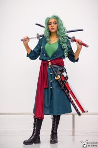
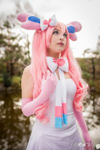

Les différents types de cosplays :
Les OC (Original Character) :
Une OC (Original Character) est un terme utilisé pour désigner les personnages imaginés par le cosplayer lui-même, ce qui offre une liberté totale au cosplayer, que ce soit au niveau du costume ou de l'interprétation.
Crossplay
Le Crossplay consiste à incarner un personnage de son genre opposé.
Par exemple, une femme se déguise en personnage masculin, ou inversement.
Genderbend
Le “Genderbend” consiste à incarner un personnage du genre opposé au sien, mais en adaptant la tenue, comme dans cet exemple de Zorro dans *One Piece*. Cela permet aux participants de réinventer des personnages célèbres sous un autre angle, créant ainsi des versions féminines de héros masculins ou des versions masculines de héroïnes féminines.
Gijinka
Le Gijinka consiste à humaniser un personnage non humain, comme ce Nymphali par exemple.
Mashup
Le “Mashup” combine au minimum deux personnages ou thèmes différents.
Par exemple, imaginez un mélange entre Batman et un personnage de Star Wars ou encore Iron Man avec Pikachu. Cela offre une infinité de combinaisons possibles.
Armor Cosplay
Ces termes et catégories enrichissent le lexique du cosplay, facilitant la communication entre les passionnés et permettant à chacun de trouver sa propre niche dans cet univers en constante évolution. Sous toutes ses formes, le cosplay célèbre la créativité, l’innovation et l’amour des personnages qui inspirent les fans du monde entier. Le “Cosplay Accurate“, en particulier, incarne l’expression ultime de cette passion, poussant les limites de la précision et de l’attention aux détails pour rendre hommage aux personnages de manière authentique et immersive.